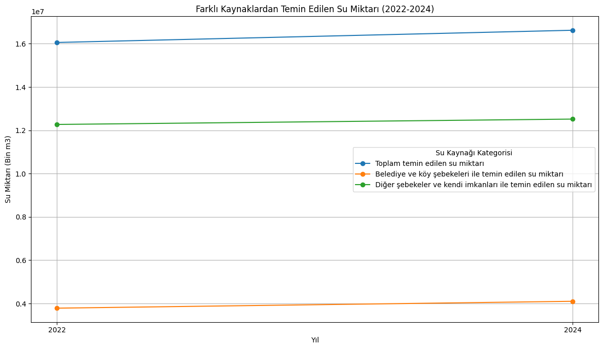
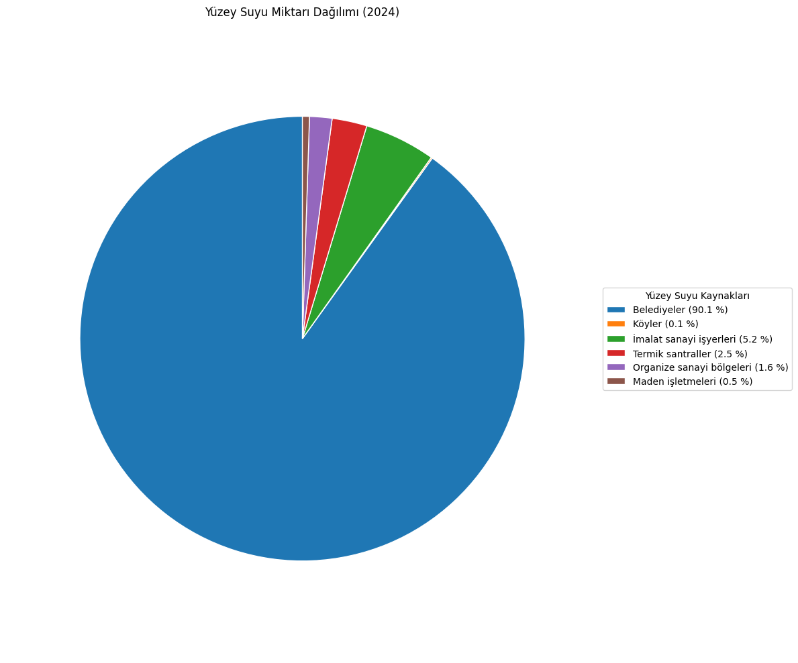

Çevresel Riski Erken Görmek
DataForest, açık kaynak çevresel veri setlerini birleştirerek yerel ölçekte risk sınıflandırması ve eğilim tahmini üreten bir karar destek prototipidir. Sistem; veri ön işleme, özellik mühendisliği ve algoritma karşılaştırmasını tek bir akış içinde sunar. Böylece öğrenciler, ham istatistiği uygulanabilir karara dönüştürebilir.
Analiz İş Akışı
DataForest; TÜİK ve uluslararası açık veri kaynaklarından toplanan zaman serisi verilerini tek bir formatta birleştirir. Pearson korelasyon analizi ile anlamlı değişkenler seçilir, model girişleri optimize edilir.
Veri seti %80 eğitim ve %20 test olarak ayrılır; k-fold çapraz doğrulama ile sistemin genellenebilirliği ölçülür. En yüksek performanslı model, aktif tahmin motoruna atanır.
GRAFİKLERİMİZ

